Project overview
CrossCom is an internal product used by e-Jan Networks. Employees use it to publish daily reports, read updates from colleagues, receive feedback, and find information about projects and teams.
When I joined the project, CrossCom had already been used inside the company for many years. It was an important part of the company culture, but its interface and technical experience had become outdated. We needed to modernize it without losing the value employees already saw in it.
I was responsible for research on the old version. I prepared the questions, analyzed the answers, formed the conclusions, and created the research presentation. I then designed the information architecture, user story map, and wireframes. After that, I designed the new desktop and mobile experience, prepared the main product states, and took part in implementation review.
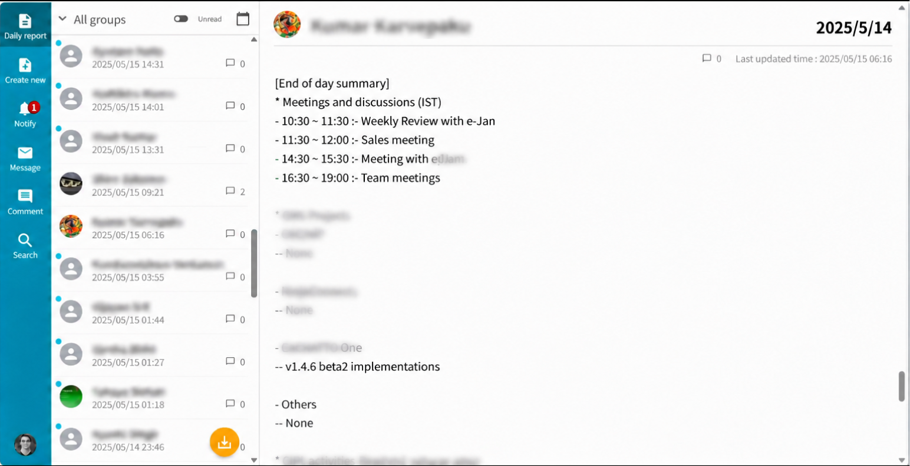
Why daily reports mattered
CrossCom is built around a simple habit. At the end of the working day, an employee writes what they completed, what they plan to do next, what problems they faced, and who they want to thank.
These reports served several purposes:
- employees could see that their work was noticed;
- managers could understand what was happening in their teams;
- colleagues could follow each other’s work;
- the company could keep knowledge about projects and decisions;
- good news and appreciation helped people stay connected.
Our task was not only to create a more modern interface. We needed to protect a useful company habit while removing the problems around it.
The problem
The old version worked, but it was becoming harder to use.
Employees had problems with speed, login, and the mobile experience. The report format did not always match the way people worked. Good News / Appreciation was often the most difficult section to complete. Feedback was useful, but it was not consistent. Finding information in old reports also took too much effort.
The project had five goals:
- make daily reports faster and easier to write;
- make feedback more visible and easier to give;
- help people find reports, projects, and experts;
- make the product work well on mobile devices;
- build a foundation for future development.
Research
I prepared and ran research on the old version of CrossCom. I wrote the questions, analyzed the answers, formed the conclusions, and created the final presentation. I then turned the findings into product requirements and design decisions.
The survey included 44 employees from Japan and India and 20 questions about writing and reading reports, feedback, search, mobile use, and overall satisfaction.
The strongest findings were:
- 89% considered daily reporting important;
- 68% valued feedback on their reports;
- 61% valued reading reports from colleagues;
- 60% wanted better speed and login reliability;
- 45% wanted a better report format;
- 40% wanted a better mobile experience.
The old version was not a failed product. Employees already understood its value. The goal was to keep that value while removing the reasons people delayed or skipped their reports.
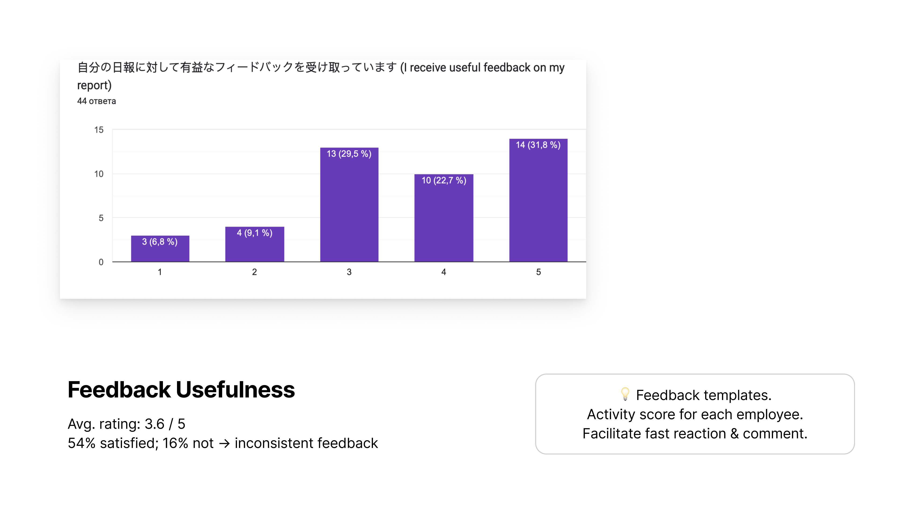
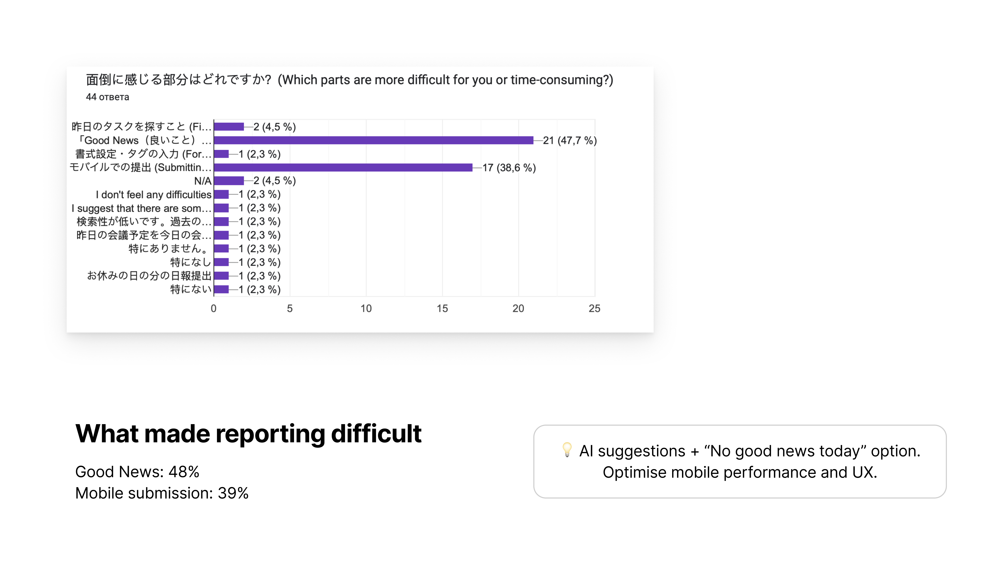
What we wanted to keep
After the research, I defined three core product values.
Visibility of work
Employees need to know that their work has been seen. Views, reactions, comments, and clear feedback support this.
Connection between people
Reports show more than tasks. They also show problems, wins, and appreciation across teams and countries.
Shared company memory
Past reports contain knowledge about projects, people, and decisions. Good search turns this archive into a working tool.
From research to product structure
I created the information architecture for the feed, search, teams, notifications, profiles, settings, posts, and report writing. I then built a 110-item user story map to connect the main journeys with detailed states.
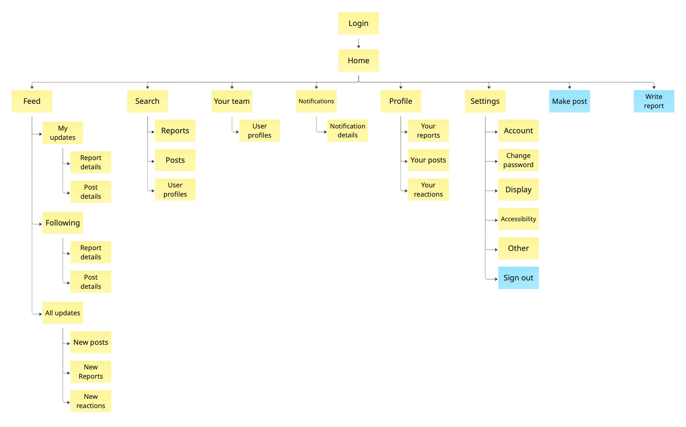
The map covered several report entry points, leave and holiday cases, drafts and autosave, comments and reactions, search filters, settings, errors, empty states, and connection problems. This helped the team agree on scope before detailed interface design.
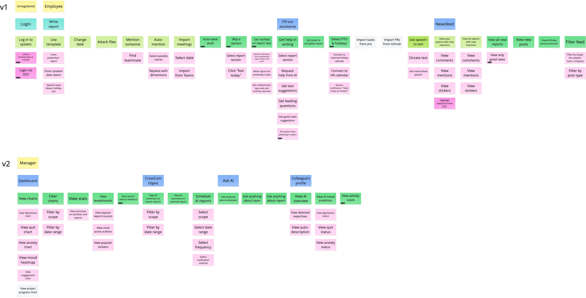
Wireframes before visual design
I used wireframes to test the main flows quickly: feeds, report details, report creation, reactions, search, profiles, and settings. Report creation received the most attention because employees needed several ways to start, including a blank report, a previous report, or a template.
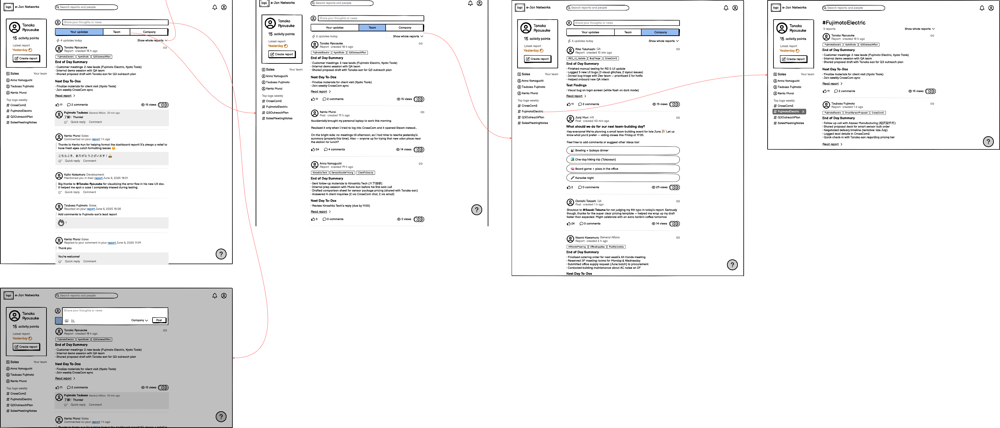
Designing the core experience
1. Easier report writing
Writing a report is the main action in CrossCom. Employees can start from scratch, reuse a previous report, choose a date, or use a template. The editor supports sections, lists, links, mentions, files, and images, while drafts are saved automatically.
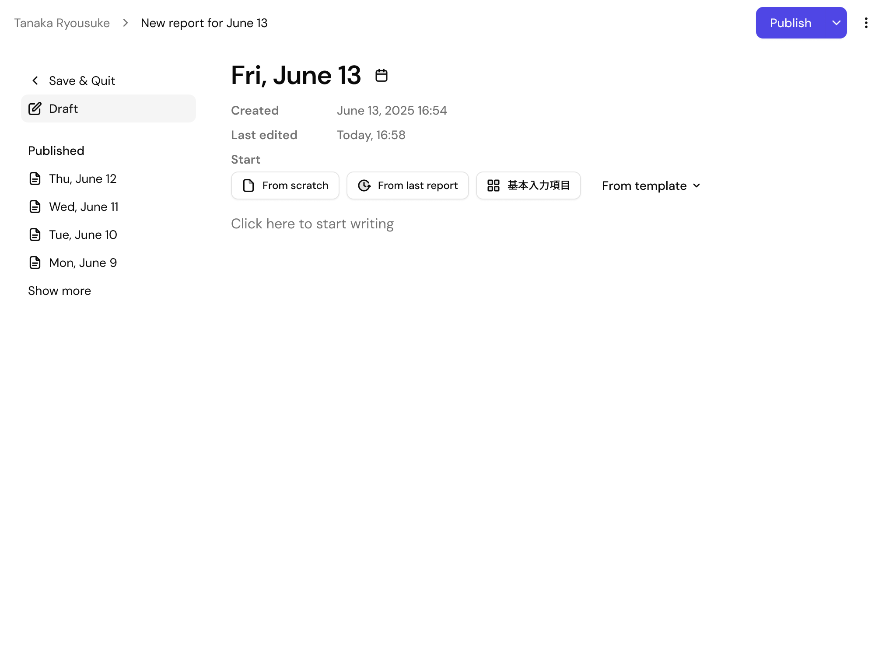
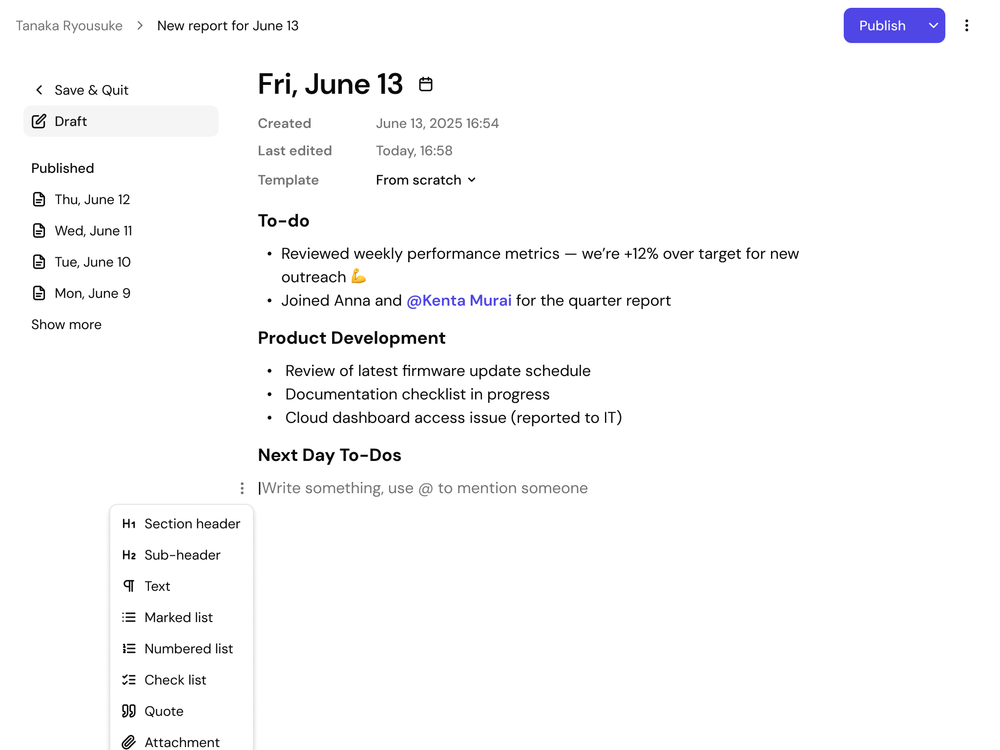
Research showed that completing a report was not always easy. The Good News / Appreciation section was the most difficult part for 48% of survey participants. People often knew what had happened during the day but found it hard to turn those events into a clear summary.
I designed AI assistance directly inside the report editor. The system analyzes the employee’s previous reports together with the current draft. It then suggests possible achievements, positive events, and moments of appreciation that may be worth adding.
Some suggestions contain placeholders for details the AI cannot know, such as a colleague or customer name. Before publication, CrossCom asks the employee to complete them and takes them directly to the first unfinished placeholder.
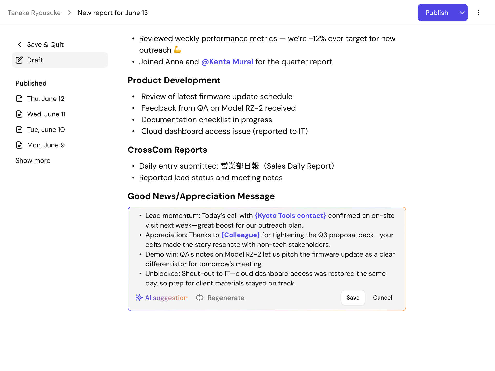
2. Faster and more precise feedback
Employees can react to a full report, selected text, or a comment. They can reply, join an existing reaction, use a quick response, emoji, or sticker, and attach an image to a comment. Text-level reactions keep feedback close to the exact work being discussed.
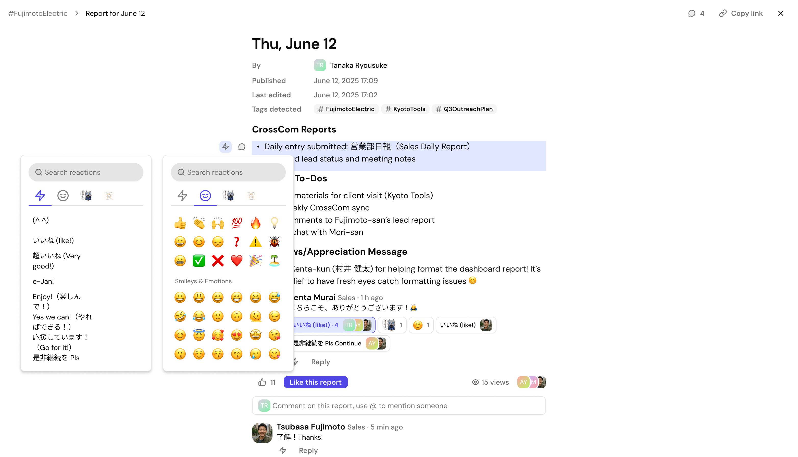
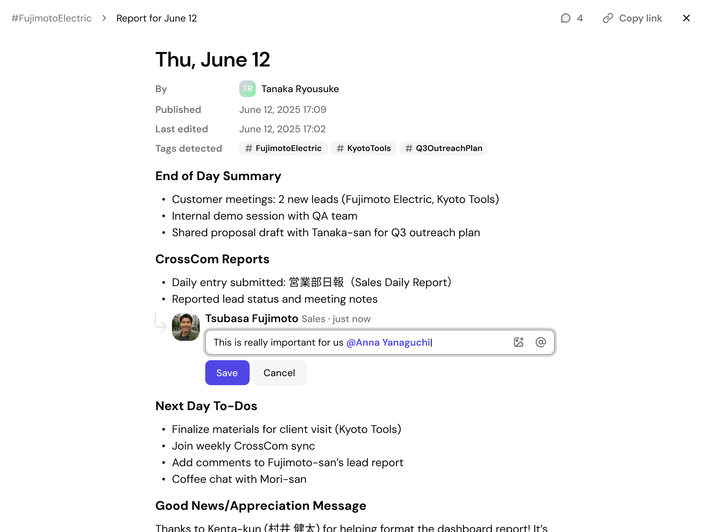
3. Search across company knowledge
Search connects reports, posts, people, teams, and tags. Filters cover date, content type, author, team, mentioned person, and sorting. This helps employees find both the right document and the colleague who knows the subject.
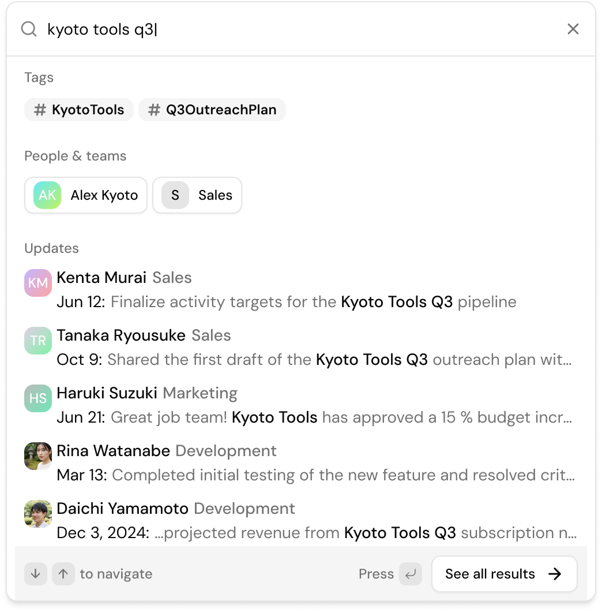
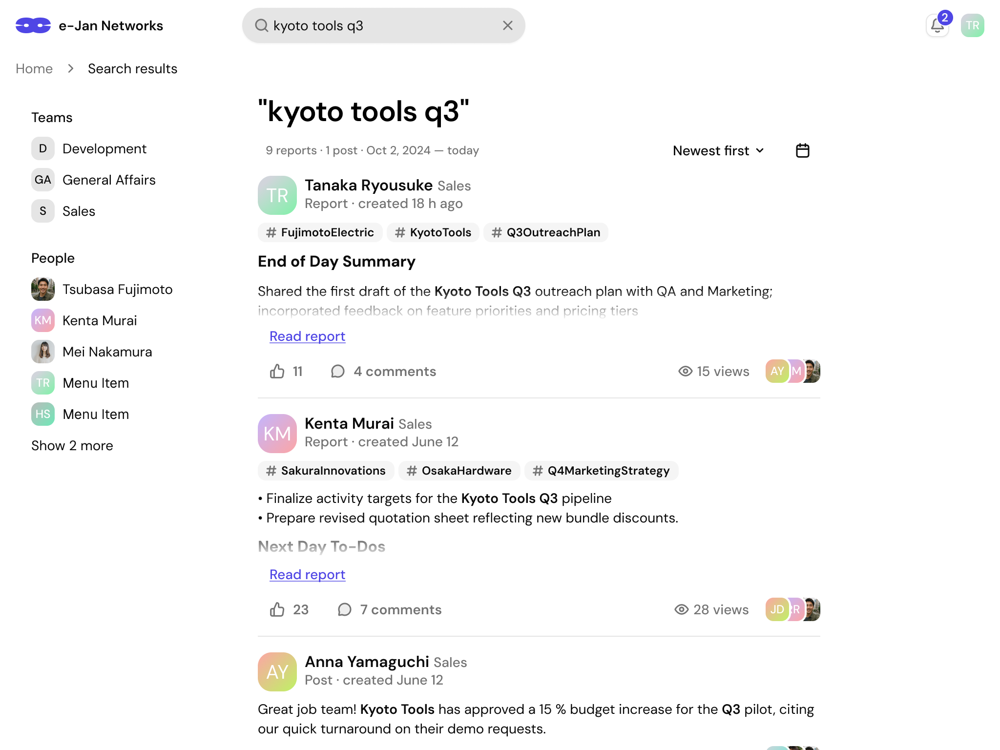
4. Tracking projects through automatic tags
Research showed that many employees used reports to follow project progress. However, finding all updates about one project required manual search and depended on how people described their work.
I proposed using automatic tags to connect related reports. After an employee publishes a report, AI detects the projects and main work topics mentioned in the text and adds relevant tags.
Each tag works as a project page. Employees can open it to see related reports in chronological order and understand how the project has developed over time. The same tags also appear in the feed and search filters.
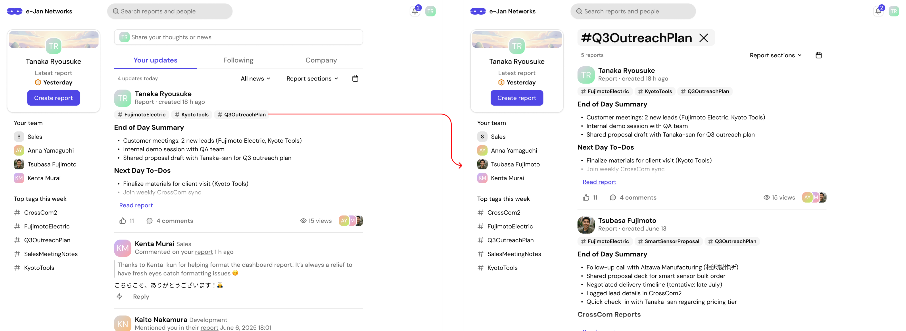
5. A dedicated mobile experience
41% of survey participants used CrossCom on their phones. Instead of shrinking the desktop version, I designed mobile cards, bottom navigation, larger tap targets, and long-report layouts for one-handed use.
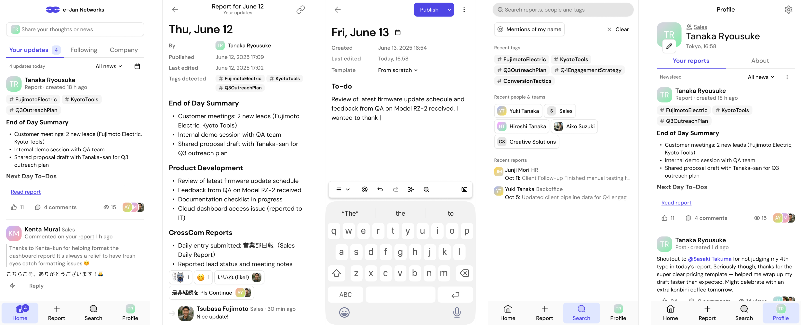
A system, not a collection of screens
The design covers desktop and mobile, English and Japanese, loading, empty and error states, narrow layouts, connection problems, file-upload failures, publication states, settings, and reusable components. The main file grew to 32 content pages with separate component and screen-template libraries.
Outcome
The new CrossCom version is available to a selected group of employees and is gradually replacing the legacy product.
The current release includes:
- viewing and publishing daily reports;
- the report feed;
- reactions and comments;
- notifications.
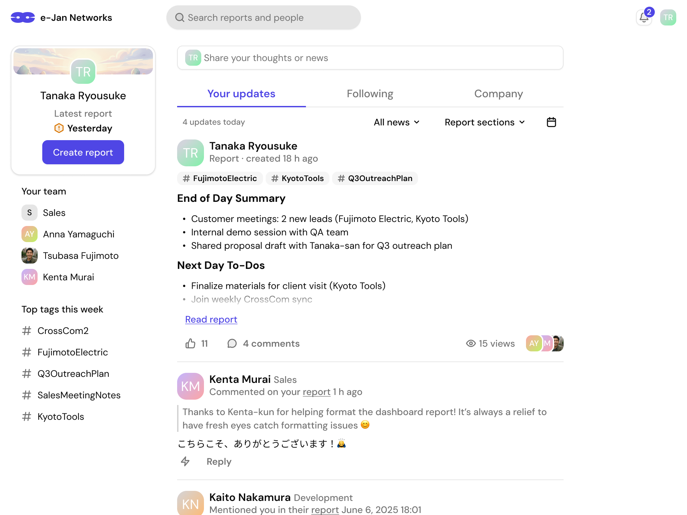
The team is collecting usage experience. A follow-up survey has not been completed yet, so there are no confirmed post-release metrics or design changes based on later testing.
Separate concept: AI for managers
After the employee experience, we explored a manager direction for team workload, activity, report topics, important changes, and people who might need support. It included team overviews, project signals, alerts, short AI summaries, and movement from a company view to a team or person.
We set an ethical boundary: report text may support careful signals about long-term workload, but it cannot diagnose mental health. The interface must use neutral language, confidence levels, and context. Product activity must not become a public employee score.
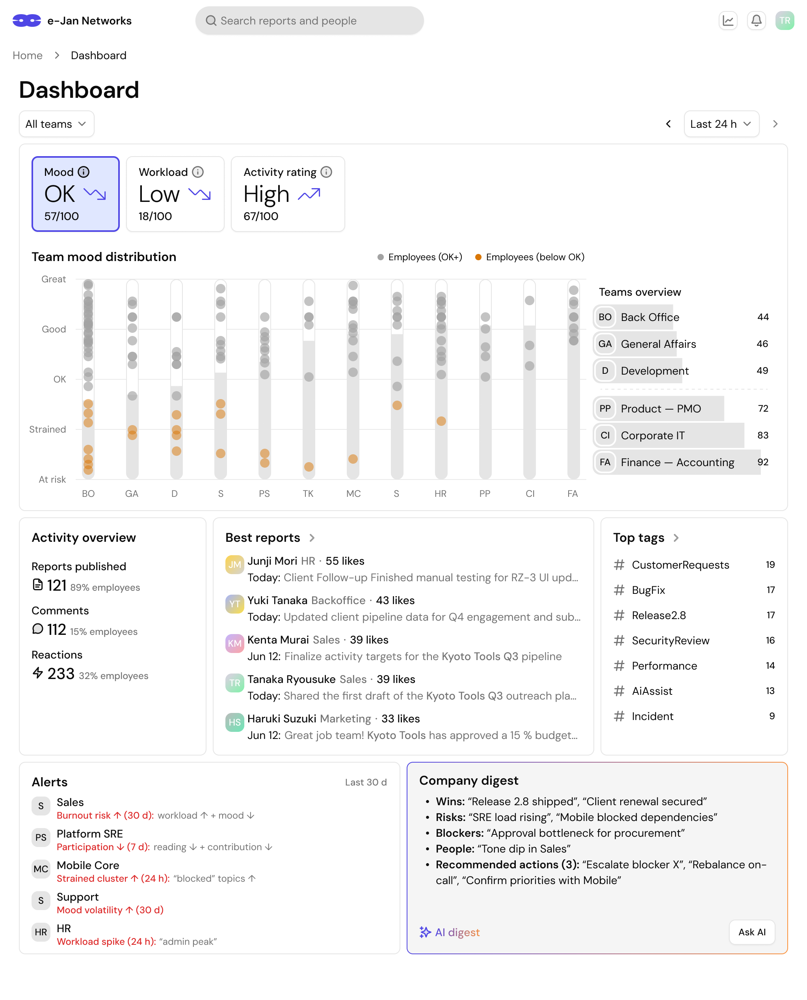
What I learned
CrossCom taught me how to modernize a product that could not be redesigned from a blank page. The old version had problems, but it also had an important role in company culture, so I first had to understand what people valued.
The project also showed that research matters only when it changes the product. Problems with report format, feedback, search, and mobile use became specific flows, states, and interface decisions.
Finally, large internal products depend on details: languages, errors, empty states, special workdays, mobile layouts, and implementation limits. These details turn an attractive design into a product people can use every day.